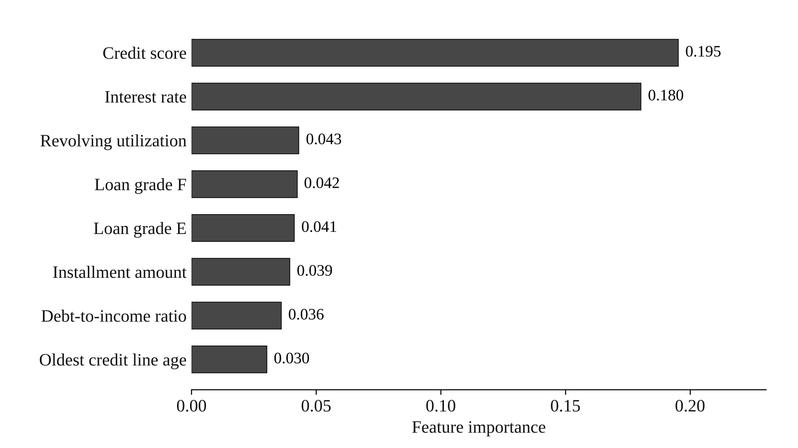
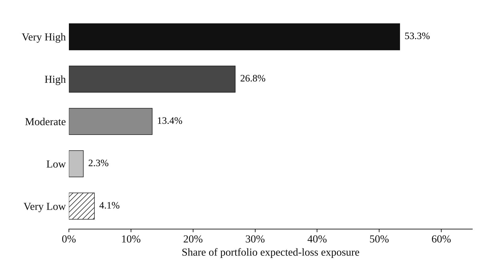
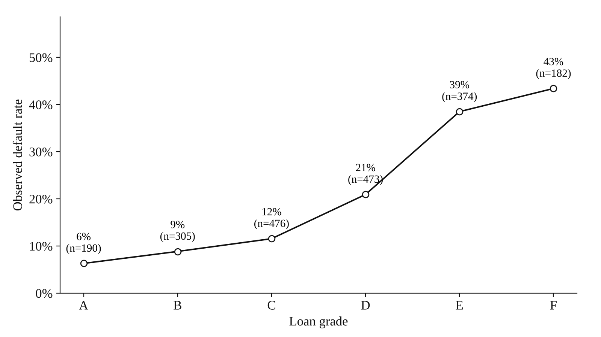
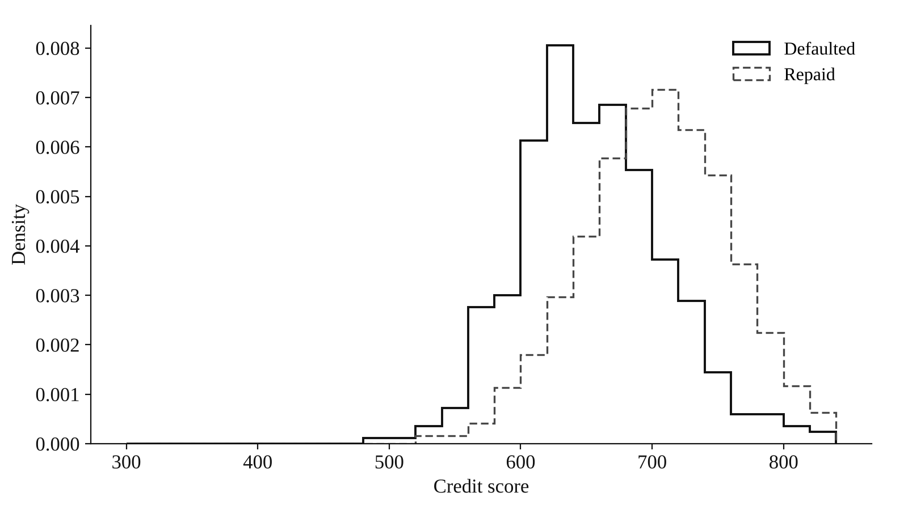

Projects · Banking analytics · Credit risk · Financial performance
Banking Risk and Financial Performance Analysis
Which borrowers default? A classification model and five risk bands on a 2,000-loan portfolio.

Context
I wanted to find which borrower and loan traits go with default.
Data
A synthetic portfolio of 2,000 loans with borrower, loan, credit history and repayment fields. 20.8% of the loans defaulted.
Method
A classification model in Python and Pandas, with feature importance. I then split the loans into five equal risk bands and estimated the expected loss in each.
Output
A risk-scored loan file and portfolio risk summaries.
Findings
The model reached a ROC AUC of 0.72. Loans in the Very High band defaulted at 53% and those in the Very Low band at 2%, and the Very High band held 53% of expected-loss exposure. Credit score and interest rate mattered most.
Reflection
Next I’d add stress tests and try stronger risk models.
Figures



